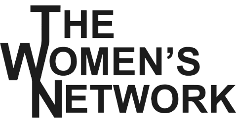
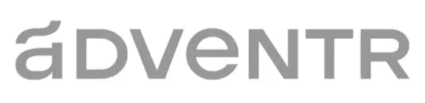
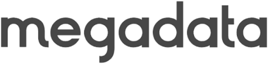

Staff experience
Buy-side, intermediary, and operating experience — plus active angel investors with a network of capital providers who understand SaaS.
We combine strategic financial market knowledge and operational expertise, guiding SaaS founders to success. Our commitment is built on trust, transparency, and real operating results.
Our clients benefit from having a partner who can:
Founded 2018 · New York




Founder / Managing Partner
Centripetal was founded in 2018 to support founders. Having met countless founders all over the world, we learned two things:
1. Finance and accounting are areas that frustrate and confuse founders.
2. The founder journey is not linear and often challenging and lonely.
We built a firm to address these two problems by providing fractional CFO expertise. We ensure founders never lose out economically or be taken advantage of while building their business, and we aim to be a personal sounding board along the way.
Learn more about usFounders and operators trust Centripetal to guide their most critical financial decisions.
"We had never dealt with institutional investors before and Centripetal really helped us take a step up to next level…Series A institutionally backed company with a board."
Shalom Reinman
"We raised a $3 million convertible note…Centripetal was certainly heavily involved…lobbying for the best deal."
Devo Harris
"Centripetal invests in relationships. They go above and beyond. They care about clients and their client's performance and success."
Jamie Vinick
"Knowing that you have someone who can build you that flexible model is critical to moving fast. Companies at our stage, moving fast is one of the only things that matters."
Michael Rose & Keith Schweitzer
Buy-side, intermediary, and operating experience — plus active angel investors with a network of capital providers who understand SaaS.
Hourly rate that is up to 60% of a full-time employee. Senior judgment and execution without carrying the cost of a VP Finance or CFO before the business needs one.
Long-term potential partnership — average engagement is 2.5 years and rising. The goal is an operating partnership, not a handoff.
60+ equity and 30+ debt lenders specialized in SaaS. Access to the capital providers who matter for your stage and vertical.
“Without numerical fluency, in the part of life most of us inhabit, you are like a one-legged man in an ass-kicking contest.”Charlie Munger · Berkshire Hathaway
The trigger is the work mix — not a revenue milestone.
FundraisingEight items to address before the first investor meeting.
MetricsNet burn divided by net new ARR. Track it monthly.
Centripetal provides embedded strategic finance support across forecasting, board and investor reporting, treasury, fundraising, and the finance infrastructure behind growth.
When the company needs senior financial judgment and embedded operating support, but the day-to-day finance ownership does not yet justify an in-house VP Finance.
The conversation starts with the finance question creating the most pressure — cash, capital, reporting, or finance ownership — and works toward the next useful step.
Let’s talk about how Centripetal can support your next phase of growth.
Schedule a Conversation